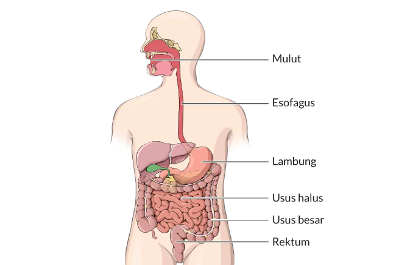

Usus
Usus adalah bagian besar pada saluran pencernaan bawah, yang memiliki peranan penting dalam pencernaan dan menyerap nutrisi. Bentuknya panjang seperti tabung, namun usus memiliki dua bagian, usus kecil dan besar. Keduanya memiliki peranan yang sangat berbeda. Usus kecil yang bertanggung jawab menyerap nutrisi dari makanan, dengan ukuran hingga 20 kaki dan terdiri atas tiga bagian. Di antaranya duodenum, jejunum, dan ileum. Sementara usus besar hanya berukuran 5 kaki, tapi diameternya besar sekitar 3 inci. Bertanggung jawab untuk menyerap air dari limbah tubuh. Dalam prosesnya, usus besar menghasilkan kotoran, yang keluar melalui rektum.